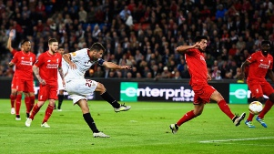
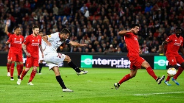

Ліверпуль та Севілья не програли жодного фіналу Кубка УЄФА або Ліги Європи, яка була організована в 2009 році. Якщо іспанська команда на міжнародному рівні перемагала лише в Кубку УЄФА, а в 2006 році завоювала Суперкубок Європи, Ліверпуль п'ять разів ставав кращим клубом континенту, вигравши Кубок європейських чемпіонів і ще тричі - Суперкубок Європи. Так сталося, що обидві команди зійшлися у фіналі поточного розіграшу Ліги Європи, і свою переможну стежку продовжила саме Севілья, яка втретє поспіль захистила титул кращої команди другого за значимістю єврокубкового клубного турніру. На старті матчу команди не стали форсувати події та почали з розвідки. Хоча вже перший момент на 8-й хвилині створили номінальні господарі з Англії, коли Джан з дальної дистанції намагався вразити дальній кут воріт Сорії - на щастя для фанів Севільї, голкіпер іспанського клубу з цим ударом впорався. Після цього моменту гра почала грузнути і команди до середини тайму демонстрували в'язкий футбол. Другий момент глядачі змогли побачити на 25-й хвилині: Лаллана класним розрізним пасом знайшов у карному Старріджа, але удар англійського форварда Ліверпуля з гострого кута прийняв на себе Сорія. Севілья змогла відповісти лише на 32-й хвилині, коли після скидки Нзонзі удару "ножицями" завдавав Банега - поруч зі стійкою. Відповідь Ліверпуля послідувала вже через три хвилини і завершилася взяттям воріт: Коутіньо, Фірміно та Старрідж розіграли класну комбінацію на підступах до карного. В результаті ця атака завершилася потужним ударом зовнішньою стороною стопи від Старріджа, який без шансів для Сорії закрутив сферу точно у дальній кут воріт. Після голу Севілья почала грати щільно, намагаючись збити темп матчу та запал Ліверпуля, який на хвилі успіху продовжував насідати на ворота іспанського клубу. Це комнаді Емері вдалося і за рахунку 1:0 фіналісти пішли на перерву. Що сталося у другому таймі, словами важко описати. Гра перевернулася з ніг на голову, коли Севілья вже у першій атаці змогла зрівняти рахунок: Феррейра пройшов по правому флангу двох суперників та вирізав у карний точно на ногу Гамейро, який запустив м'яч повз Міньоле. Такий початок явно не влаштовував команду Клоппа, тому вона знову пішла великими силами на ворота суперника. У свою чергу Севілья грамотно та надійно захищалася. Якщо на власній половині Ліверпулю вдавалося тримати м'яч, то вже при переході на половину суперника ігровий снаряд швидко опинявся в ногах чинного чемпіона. Одна з таких контратак ледь не призвела до другого голу, коли на 60-й хвилині Гамейро не зміг реалізувати вихід 1 на 1 - Міньоле на пару з Туре команду врятували. Втім, безсилим був голкіпер Ліверпуля вже через чотири хвилини: Вітоло обігрався з партнером, увійшов у карний суперника, але пробити не встиг. Але за нього це зробив Коке, який підключився до атаки з лівого краю та потужним пострілом відправив м'яч у дальній кут воріт. Після цього голу Ліверпуль явно опинився в нокдауні, команда почала поспішати навіть в таких моментах, коли цього не потрібно було робити. Не допоміг і ряд замін від Клоппа: Бентеке та Орігі на двох навіть моменту не створили. Третій гол Ліверпуль пропустив через шість хвилин після другого. Дубль на свій рахунок записав все той же Коке, який цього разу підключився правим флангом: Капітан Севільї отримав м'яч на правому краю карного та потужним ударом прошив голкіпера Ліверпуля втретє. Англійський клуб ще мав 20 хвилин на порятунок, але оговтатися від цього нокауту червоним вже так і не вдалося. Можна звісно згадати спроби Коутіньо та Старріджа, однак назвати це бодай небезпечними моментами язик не повернеться. Удар Філіппе пішов над поперечкою, а з кволим ударом низом від Деніела Сорія впорався без особливих проблем. У підсумку Севілья довела справу до перемоги, ставши першим в історії клубом, який тричі поспіль дійшов до фіналу та став автором переможного єврокубкового хет-трику. Також варто привітати з першим завойованим єврокубковим трофеєм Євгена Коноплянку, який хоч і не зіграв у фіналі, але зробив великий внесок в загальний успіх іспанської команди.